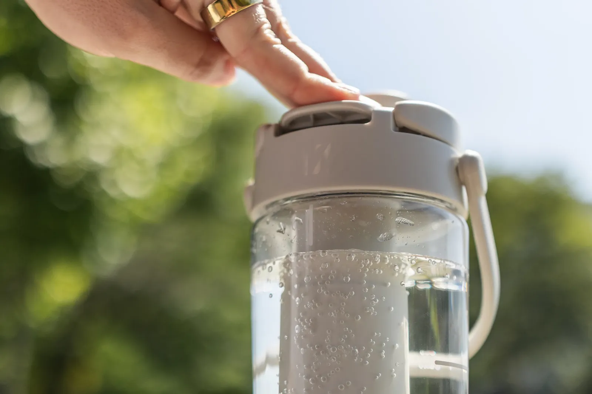

Your cart is empty
Continue shoppingHow it works
Still to sparkling,
in seconds.
Fill it, load a canister, press it. Fizz carbonates plain water right in the bottle. No countertop machine, no cans, anywhere you go.

3steps from flat
to fizz
to fizz
The steps
Fill. Push. Fizz.
Every step takes seconds. Here’s exactly what to do, and why it works.
Step 01
Fill it with cold water
Fill the bottle to the line on the side, nothing more. Then you’re ready for the next step.
- Cold water
- Up to the fill line
- 20 oz / 590 ml
Why it matters Cold water carbonates best: it holds CO₂ longer and gives you a cleaner, crisper bubble.
Step 02
Lock in a CO₂ canister
Push a Fizz canister into the base firmly until you hear it click, then give the cartridge a quarter turn to seal.
- Push until it clicks
- Quarter turn to seal
- 1 canister ≈ 12 L
Why it matters That quarter turn is what builds the pressure for perfect fizz.
Step 03
Press, hold, fizz
Press the lid down and hold for a few seconds. Still water turns sparkling in seconds. Release when you hear the hiss, and enjoy.
- Press & hold the lid
- Listen for the hiss
- Sparkling in seconds
Why it matters The push-button lid is the whole machine. No dials, no settings.
Tutorial
Watch it, start to finish
Every step in one short video.
Questions
Good to know
How much water does one canister carbonate?
Each Fizz canister carbonates up to 12 liters, roughly 20 fills of the 20 oz bottle.
What’s in the box?
1x Fizz Bottle, 1x CO2 Charger, 1x USB-C Charging Cable and a Quick Start Guide.
How do I get more CO₂?
Fizz canisters come in 6-packs for $10. Buy once, or subscribe and get a 6-pack every month for $10.
Can I add flavor?
Yes. Drop in a flavor pack (Mixed Berry, Cherry Limeade or Orange Tangerine), shake, press and drink.
Why should I use cold water?
Cold water carbonates best: it holds CO₂ longer and gives you a cleaner, crisper bubble.
Ready to fizz?
Everything you need to go from flat to sparkling.